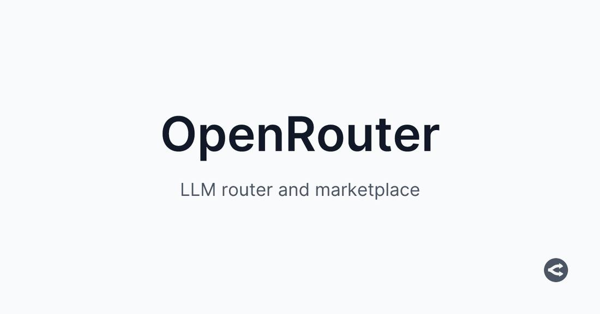
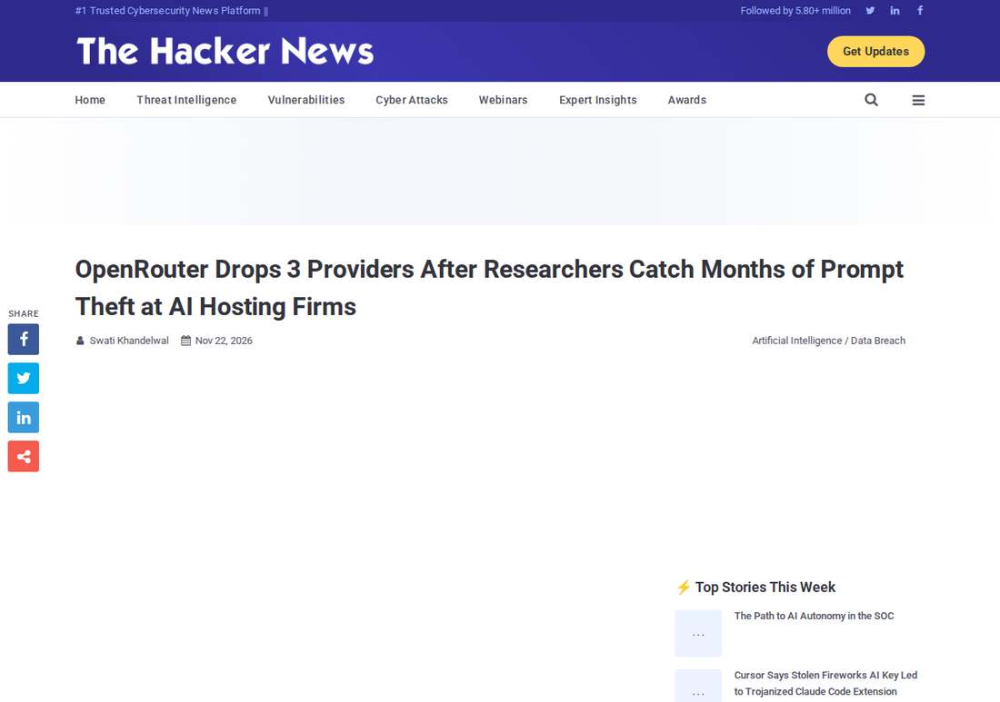

OpenRouter Drops Three Providers After Researchers Catch Months of Prompt Theft
OpenRouter cut three providers and stripped 125 endpoints of Zero Data Retention status after researchers caught months of prompt theft inside inference hosts.

- 01THE TEST — July-November 2026: Dragos seeds about two million prompts with unique canary links and credentials.
- 02THE THEFT — Mid-July onward: attackers copy traffic inside three inference providers; one lab fetches secrets from most seeded prompts.
- 03THE DISCLOSURE — November 19-21: Dragos publishes; Phala, Together AI and Novita post provider notices.
WHAT HAPPENEDWhat Happened
On November 22, 2026, OpenRouter published an incident announcement, "Data Processing Incidents on Inference Providers," saying it has off-boarded three providers from its platform, removed 125 endpoints from Zero Data Retention eligibility, and notified all potentially affected customers. The findings showed no breach of OpenRouter itself, the company said. The 125 endpoints removed cover providers flagged by researchers plus additional endpoints cut as a precaution, and any endpoint stripped of ZDR status will need assurances and validation before it is restored.
The action follows canary-token research by Dragos, published earlier in the week and led by chief research officer HD Moore. Between July and November 2026 the team seeded about two million prompts with unique web links and credentials, then watched for anyone using them. Attackers stole data from inside three AI inference providers for months, and none of the three knew until the researchers told them. The earliest breach began in mid-July, and planted keys and secret links were still being accessed months after the first thefts. Some of the stolen requests were flagged Zero Data Retention, the setting that is supposed to mean a prompt is never stored.
The provider disclosures OpenRouter links tell three different stories. At Phala, an attacker took control of an inference server and could view request data while it was being processed; the incident was contained on November 8, and requests to the DeepSeek V4 Flash 0731 model that reached Phala through the gateway between October 21 at 00:00 UTC and November 8 at 05:35 UTC should be treated as exposed, with every key, token, password or other secret in them rotated. At Together AI, an unauthorized party downloaded stored samples of customer prompts after an AI coding agent committed a credential to the company's public GitHub repository; the samples came from requests to MiniMax M3, GLM-5.2 and Kimi K2.6 in June and July, and the company says it has no reason to believe the data went further and has made zero data retention the default for new accounts. Novita confirmed a routing configuration issue caused some MiniMax requests to be sent on to MiniMax's official API, beyond what was intended for those customers.
WHY IT MATTERSThe breach was inside the house, not at the door
The largest of the three breaches shows how deep the exposure ran. A couple hundred planted AWS keys, each sent in exactly one request to one provider during a few short windows in late October, were all stolen, including some from requests the provider had rejected before a model ever ran, indicating the attacker was copying traffic at the first point of arrival. The thief tested keys within hours, listed S3 buckets, searched Secrets Manager and Parameter Store, and tried to create Bedrock API keys and add IAM users, driving tens of thousands of AWS API calls. One attacker appears to have compromised two providers at once from a single rented server, and on November 1 brought in ARTEX, an AI-driven penetration testing framework, to confirm keys it already held were still live.
The second finding needed no break-in at all. Sellers on an AI inference marketplace listed models at the lowest prices, enabled request logging, and collected what flowed through. One operator, working from a Mac on home broadband in France, took passwords from two prompts and typed root SSH login attempts by hand. Route tracing across about 2,000 paths found several hundred unidentified systems, plus one seller that quietly adds about 1,000 hidden tokens to every prompt. The research also found a Chinese AI lab, which it does not name, fetching secret links from more than half of the seeded prompts sent to its models between July and October, including about two-thirds of those marked no data collection or Zero Data Retention. The lesson is the one flash 462 already drew from the MiniMax warning: a privacy flag binds only the first hop, and the router's label says nothing about who reads the prompt after it leaves the gateway.
WHAT TO WATCHWhat to watch after the purge
Watch whether OpenRouter names the three providers it removed, and whether the provider that first blamed an internal misconfiguration, then a partner's data processing, before its own investigation found compromised internal credentials, discloses its incident publicly. It had still not done so as of this week. Watch whether the roughly dozen providers the researchers are now working with publish their own notices, and whether other routers audit their forwarding chains the way OpenRouter says it now will, adapting the canary testing to run continuously and verifying network paths to find where requests are forwarded to third parties.
Watch also for the customer response. The researchers' advice is blunt: pick upstream providers yourself instead of accepting the default pool, verify that privacy settings actually change where requests go, and stay away from reseller marketplaces, some of whose capacity runs on stolen keys. Self-hosting is the only option in which no third party reads a prompt. For OpenRouter, the test of the purge is whether the 125 endpoints ever regain ZDR status, and on what evidence.
THE SHIFTWhat Changed
SIGNAL JUDGMENT — ANALYSISOpenRouter Drops Three Providers After Months of Prompt Theft
Tokenta Signal's judgment: This is the enforcement half of the story flash 462 reported. The MiniMax warning showed a privacy label describing only the first hop; the Dragos research behind this purge shows the failure was wider and worse, with attackers copying traffic at the point of arrival, marketplaces logging prompts for resale, and a lab fetching secrets from most of the prompts sent to its models. OpenRouter's response is the right shape, removing providers and endpoints first and demanding validation before restoring any label, but the open questions matter more than the purge: the three providers are unnamed, one breached provider still has not disclosed, and the router's own admission is that its ZDR flag was assembled from attestations it never verified. Until routers verify the whole chain, the label is a promise about the first hop only.
WHAT REMAINS UNCERTAINWhat Remains Uncertain
EVIDENCEEvidence

OpenRouter announced on November 22, 2026, that it has off-boarded three providers and removed 125 endpoints from Zero Data Retention eligibility after Dragos canary-token research found prompt theft at AI inference providers. The findings showed no breach of OpenRouter itself; the company has notified all potentially affected customers.
PRIMARY SOURCESPrimary Sources
- OpenRouter: Data Processing Incidents on Inference Providers
https://openrouter.ai/blog/announcements/data-processing-incidents-on-inference-providers/ - The Hacker News: OpenRouter Drops 3 Providers After Researchers Catch Months of Prompt Theft at AI Hosting Firms
https://thehackernews.com/2026/11/openrouter-drops-3-providers-after.html